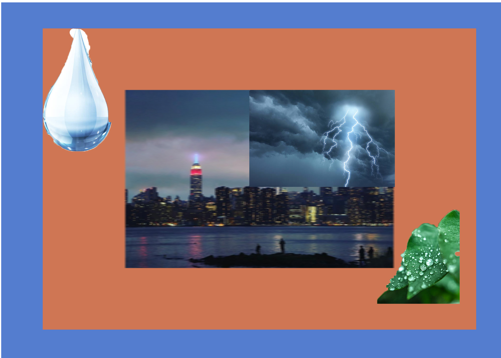

This story is about a view of the city with movement, blur and lighting. The lead and water drop are there to represent calm. I would say it is a calm yet hectic place and it is called the city movement.
 <Credits: BlackJack3D. “Isolated on White Background. 3D Render.” IStock, www.istockphoto.com/photo/water-drop Maxiphoto. “Bright Lightning Illuminates Dark Cloudy Sky during a Thunderstorm....” IStock, www.istockphoto.com/photo/thunderstorm-lightning-with-dark